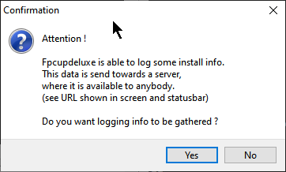

Depois de instalar o FPC dos repositórios, você pode seguir as instruções nesta página para prosseguir com a instalação do Lazarus-IDE.
Caso ainda não tenha instalado o FreePascal Compiler(FPC, daqui em diante), então siga este link:
Instalação no Linux: Instalação do FPC a partir dos repositórios
Depois de instalar o FPC dos repositórios, usaremos o fpcupdeluge para instalar Lazarus-IDE no HOME do usuário. Instalar o Lazarus-IDE em nossa $HOME é muito bom porque não necessitaremos de permissões especiais para aplicar patches ou correções em pacotes instalados ou que instalaremos.
Antes de prosseguir precisamos fazer um ajuste importante em nosso ambiente Linux, ao executar programas construídos no Lazarus no ambiente Linux pode surgir a seguinte mensagem de dependência no terminal:
Gtk-Message: 00:00:00.000: Failed to load module "pk-gtk-module"
O programa executa normalmente, mas essa mensagem ou a falta dessa dependência pode indicar que algum aspecto visual não está como deveria ser, para corrigir o problema, execute:
O programa executa normalmente, mas a falta dessa dependência pode indicar que algum aspecto visual não está como deveria ser, para corrigir o problema, execute:
sudo -i
echo "/usr/lib64/gtk-3.0/modules" > /etc/ld.so.conf.d/pk-gtk.conf
echo "/usr/lib64/gtk-2.0/modules" > /etc/ld.so.conf.d/gtk2.conf
ldconfig
E a mensagem de dependência no terminal sumirá.
Agora vamos prosseguir, visite a página:
https://github.com/LongDirtyAnimAlf/fpcupdeluxe/releases
O arquivo acima é um script, depois de baixá-lo, no terminal dê permissão de execução:
chmod +x fpcupdeluxe-x86_64-linux
./fpcupdeluxe-x86_64-linux
Não é necessário usar "sudo" porque essa será uma instalação homeuser, isto é, não vai requerer permissões administrativas.
Na tela seguinte selecione como FPC Version a opção fixes e para Lazarus version também fixes, depois clique em Setup+:
Depois faça o seguinte ajuste selecionando a plataforma que deseja compilar seus programas:

Depois confirme com o Botão OK e então em Install/Update FPC+Laz e prossiga com a instalação:

Então prepare-se, ela é bastante demorada. Após a conclusão com sucesso será gerado uma entrada no menu do sistema. Agora o Lazarus aparecerá no menu de pesquisa do ambiente GNOME.
Também foi gerado o arquivo Lazarus_fpcupdeluxe no pasta HOME do usuário. Se precisar executar o Lazarus por fora do menu padrão, então execute este script.